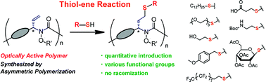
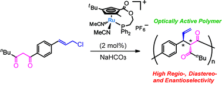
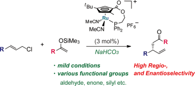
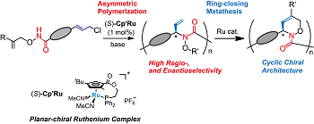
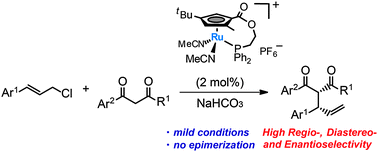
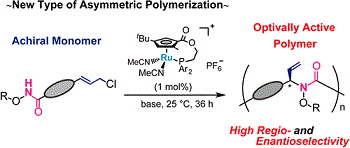

鬼塚研究室 ONITSUKA LAB.
大阪大学大学院理学研究科高分子科学専攻 高分子合成・反応化学大講座
発表論文
2017
- Naoya Kanbayashi, Sou Miyamot, Yuki Ishido, Taka-aki Okamura,
Kiyotaka Onitsuka
"Post-Polymerization Modification of the Side Chain in Optically Active Polymer by Thiol-Ene Reaction"
Polym. Chem., 2017, 8, 985-994. DOI: 10.1039/C6PY01946C

2016
- Taka-aki Okamura, Yui Omi, Yasunori Hirano, Kiyotaka Onitsuka
"Comparative studies on the contribution of NH···S hydrogen bonds in tungsten and molybdenum benzenedithiolate complexes"
Dalton Trans., 2016, 45, 15651-15659. DOI: 10.1039/C6DT02250B
- Taka-aki Okamura, Takayoshi Yamada, Yuki Hasenaka, Satoshi
Yamashita, Kiyotaka Onitsuka
"Unexpected Reaction Promoted by NH···O=Mo Hydrogen Bonds in Nonpolar Solvents"
Eur. J. Inorg. Chem., 2016, 18, 2952-2961. DOI: 10.1002/ejic.201600081
- Naoya Kanbayashi, Kazuki Hosoda, Taka-aki Okamura, Sadahito
Aoshima, Kiyotaka Onitsuka
"Enantio- and Diastereoselective Polymerization: Asymmetric Allylic Alkylation Catalyzed by a Planar-chiral Cp′Ru Complex"
Polym. Chem., 2016, 7, 3691-3699. DOI: 10.1039/C6PY00484A
- Naoya Kanbayashi, Arisa Yamazawa, Koichiro Takii, Taka-aki
Okamura, Kiyotaka Onitsuka
"Planar-chiral Cyclopentadienyl Ruthenium Catalyzed Regio- and Enantioselective Asymmetric Allylic Alkylation of Silyl Enolates under Unusually Mild Condition"
Adv. Synth. Catal., 2016, 258, 555-560. DOI: 10.1002/adsc.201500970 SYNFACTS selected (Synfacts 2015, 11, 1079.) DOI: 10.1055/s-0035-1562073
- Li Luo, Peng Wang, Qing Liu, Taka-aki Okamura, Gao-Chao Lv, Yi
Lu
"Synthesis, structure and sorption property of metal complexes with mixed multicarboxylate and imidazole-containing ligands"
Microporous and Mesoporous Materials, 2016, 219, 199-208.
2015
- Naoya Kanbayashi, Taka-aki Okamura, Kiyotaka Onitsuka
"New Synthetic Approach for Optically Active Polymer Bearing Chiral Cyclic Architecture: Combination of Asymmetric Allylic Amidation and Ring-closing Metathesis Reaction"
Macromolecules, 2015, 48, 8437-8444. DOI: 10.1021/acs.macromol.5b02067
- Taka-aki Okamura, Yui Omi, Manami Fujii, Miki Tatsumi, Kiyotaka
Onitsuka
"Significant differences of monooxotungsten(IV) and dioxotungsten(VI) benzenedithiolates containing two intramolecular NH···S hydrogen bonds from molybdenum analogues"
Dalton Trans., 2015, 44,108090-18100. DOI: 10.1039/C5DT03278D
- Naoya Kanbayashi, Kazuki Hosoda, Masanori Kato, Koichiro Takii,
Taka-aki Okamura, Kiyotaka Onitsuka
"Enantio- and diastereoselective asymmetric allylic alkylation catalyzed by planar-chiral cyclopentadienyl ruthenium complex"
Chem. Commun., 2015, 10895-10898. DOI: 10.1039/C5CC02414E SYNFACTS selected (Synfacts 2015, 11(10), 1079.) DOI: 10.1055/s-0035-1560225
- Yuki Hasenaka, Taka-aki Okamura,Kiyotaka Onitsuka
"Modeling of the hydrophobic microenvironment of water-soluble molybdoenzymes in an aqueous micellar solution"
Dalton Trans., 2015,44, 12618-12622. DOI: 10.1039/C5DT01112D
- Taka-aki Okamura, Ryosuke Furuya, Kiyotaka Onitsuka
"Synthesis and structures of soluble magnesium and zinc carboxylates containing intramolecular NH···O Hydrogen Bonds in nonpolar solvents"
Dalton Trans., 2015, 44, 7512-7523. DOI: 10.1039/C5DT00053J
- Yuki Hasenaka, Taka-aki Okamura,Kiyotaka Onitsuka
"Efficient uptake of dimethyl sulfoxide by the desoxomolybdenum(IV) dithiolate complex containing bulky hydrophobic groups"
Dalton Trans., 2015, 44, 6260-6267. DOI: 10.1039/C5DT00075K
2014
- Taka-aki Okamura, Ryosuke Furuya, Kiyotaka Onitsuka
"Regulation of the Hydrolytic Activity of Mg(2+)-Dependent Phosphatase Models by Intramolecular NH···O Hydrogen Bonds"
J. Am. Chem. Soc., 2014, 42, 14639-14641. DOI: 10.1021/ja509006x
- Yuki Hasenaka, Taka-aki Okamura, Miki Tatsumi, Naoya Inazumi,
Kiyotaka Onitsuka
"Behavior of anionic molybdenum(IV, VI) and tungsten(IV, VI) complexes containing bulky hydrophobic dithiolate ligands and intramolecular NH···S hydrogen bonds in nonpolar solvents"
Dalton Trans., 2014, 43, 15491-15502. DOI: 10.1039/C4DT01646G
- Naoya Kanbayashi, Taka-aki Okamura, Kiyotaka Onitsuka
"New Method for Asymmetric Polymerization: Asymmetric Allylic Substitution Catalyzed by a Planar-Chiral Ruthenium Complex"
Macromolecules, 2014, 47, 4178-4185. DOI: 10.1021/ma5008623
- Yue Zhao, Kai Chen, Jian Fan, Taka-aki Okamura, Yi Lu, Li Luo,
Wei-Yin Sun
"Structural modulation of silver complexes and their distinctive catalytic properties"
Dalton Trans., 2014, 43, 2252-2258. - Shui-Sheng Chen, Peng Wang, Satoshi Takamizawa, Taka-aki
Okamura, Min Chen, Wei-Yin Sun
"Zinc(II) and cadmium(II) metal-organic frameworks with 4-imidazole containing tripodal ligand: sorption and anion exchange properties"
Dalton Trans., 2014, 43, 6012-6020. - Hai-Wei Kuai, Taka-aki Okamura, Wei-Yin Sun
"A series of divalent metal complexes with mixed 5-(imidazol-1-ylmethyl)isophthalic acid and N-donor ligands: Synthesis, characterization and property"
Polyhedron, 2014, 72, 8-18.
2013
- Naoya Kanbayashi, Kazuhiro Takenaka, Taka-aki Okamura, Kiyotaka
Onitsuka
"Asymmetric Auto-Tandem Catalysis with a Planar-Chiral Ruthenium Complex: Sequential Allylic Amidation and Atom-Transfer Radical Cyclization"
Angew. Chem., Int. Ed., 2013, 52, 4897-4901.
DOI: 10.1002/anie.201300485 SYNFACTS selected (Synfacts 2013, 9, 0760.) - Taka-aki Okamura, Yasuhito Ushijima, Yui Omi, Kiyotaka Onitsuka
"Systematic Investigation of Relationship between Strength of NH···S Hydrogen Bond and Reactivity of Molybdoenzyme Models"
Inorg. Chem., 2013, 52, 381-394.
DOI: 10.1021/ic302149p Virtual Issue selected (Journal Page) - Taka-aki Okamura, Kumiko Kunisue, Yui Omi, Kiyotaka Onitsuka
"Strong NH···S hydrogen bonds in molybdoenzyme models containing anilide moieties"
Dalton Trans., 2013, 7569-7578.
DOI: 10.1039/C3DT50139F - Taka-aki Okamura, Junko Nakagawa
"Contribution of Intramolecular NH···O Hydrogen Bonds to Magnesium-Carboxylate Bonds"
Inorg. Chem., 2013, 52, 10812-10824.
DOI: 10.1021/ic400671v - Li Luo, Kai Chen, Qing Liu, Yi Lu, Taka-aki Okamura, Gao-Chao
Lv, Yue Zhao, Wei-Yin Sun
"Zinc(II) and Cadmium(II) Complexes with 1,3,5-Benzenetricarboxylate and Imidazole-Containing Ligands: Structural Variation via Reaction Temperature and Solvent"
Cryst. Growth Des., 2013, 13, 2312-2321.
2012
- Koichiro Takii, Naoya Kanbayashi, Kiyotaka Onitsuka
"Modular synthesis of optically active lactones by Ru-catalyzed asymmetric allylic carboxylation and ring-closing metathesis reaction"
Chem. Commun., 2012, 48, 3872-3874.
DOI: 10.1039/C2CC18137A SYNFACTS selected (Synfacts 2012, 8, 0634.) - Taka-aki Okamura, Miki Tatsumi, Yui Omi, Hitoshi Yamamoto,
Kiyotaka Onitsuka
"Selective and Effective Stabilization of MoVI=O Bonds by NH···S Hydrogen Bonds via Trans Influence"
Inorg. Chem., 2012, 51, 11688-11697.
DOI: 10.1021/ic301597d - Yue Zhao, Xin Zhou, Taka-aki Okamura, Min Chen, Yi Lu, Wei-Yin
Sun, Jin-Quan Yu
"Silver supramolecule catalyzed multicomponent reactions under mild conditions"
Dalton Trans., 2012, 41, 5889-5896.
DOI: 10.1039/c2dt30134b - Shui-Sheng Chen, Zhi-Hao Chen, Jian Fan, Taka-aki Okamura,
Zheng-Shuai Bai, Mei-Fang Lv, Wei-Yin Sun
"Synthesis and Characterization of Metal Complexes with Mixed 4-Imidazole-Containing Tripodal Ligand and Varied Dicarboxylic Acid"
Cryst. Growth Des., 2012, 12, 2315-2326. - Shui-Sheng Chen, Yue Zhao, Jian Fan, Taka-aki Okamura,
Zheng-Shuai Bai, Zhi-Hao Chen, Wei-Yin Sun
"Construction of coordination frameworks based on 4-imidazolyl tecton 1,4-di(1H-imidazol-4-yl)benzene and varied carboxylic acids"
CrystEngComm, 2012, 14, 3564-3576. - Chao Hou, Qing Liu, Taka-aki Okamura, Peng Wang, Wei-Yin Sun
"Dynamic porous metal-organic frameworks: synthesis, structure and sorption property"
CrystEngComm, 2012, 14, 8569-8576. - Min Chen, Zheng-Shuai Bai, Qing Liu, Taka-aki Okamura, Yi Lu,
Wei-Yin Sun
"Coordination polymers with mixed 4,4'-bipyridine-2,2',6, 6'-tetracarboxylate and imidazole-containing ligands: synthesis, structure and properties"
CrystEngComm, 2012, 14, 8642-8648.
2011
- Naoya Kanbayashi, Kiyotaka Onitsuka
"Ruthenium-Catalyzed Regio- and Enantioselective Allylic Substitution with Water: Direct Synthesis of Chiral Allylic Alcohols"
Angew. Chem., Int. Ed., 2011, 50, 5197-5199.
DOI: 10.1002/anie.201101078 SYNFACTS selected (Synfacts 2011, 8, 0876.) - Takashi Kajitani, Hisanari Onouchi, Shin-ichiro Sakurai, Kanji
Nagai, Kento Okoshi, Kiyotaka Onitsuka, Eiji Yashima
"Latticelike Smectic Liquid Crystal Phase in a Rigid-Rod Helical Polyisocyanide with Mesogenic Pendants"
J. Am. Chem. Soc., 2011, 133, 9156-9159.
DOI: 10.1021/ja201133d - Man-Sheng Chen, Min Chen, Satoshi Takamizawa, Taka-aki Okamura,
Jian Fan, Wei-Yin Sun
"Single-crystal-to-single-crystal transformations and selective adsorption of porous copper(II) frameworks"
Chem. Commun., 2011, 47, 3787-3789.
DOI: 10.1039/C0CC04689B - Zhi Su, Min Chen, Taka-aki Okamura, Man-Sheng Chen, Shui-Sheng
Chen, Wei-Yin Sun
"Reversible Single-Crystal-to-Single-Crystal Transformation and Highly Selective Adsorption Property of Three-Dimensional Cobalt(II) Frameworks
Inorg. Chem., 2011, 50, 985-991.
DOI: 10.1021/ic101618n - Shui-Sheng Chen, Gao-Chao Lv, Jian Fan, Taka-aki Okamura, Min
Chen, Wei-Yin Sun
"Entangled Coordination Frameworks with 1,4-Di(1H-imidazol-4-yl)benzene"
Cryst. Growth Des., 2011, 11, 1082-1090. - Zhi Su, Jian Fan, Min Chen, Taka-aki Okamura, Wei-Yin Sun
"Syntheses, characterization, and properties of three-dimensional pillared frameworks with entanglement"
Cryst. Growth Des., 2011, 11, 1159-1169. - Min Chen, Shui-Sheng Chen, Taka-aki Okamura, Zhi Su, Man-Sheng
Chen, Yue Zhao, Wei-Yin Sun, Norikazu Ueyama
"pH Dependent Structural Diversity of Metal Complexes with 5-(4H-1,2,4-Triazol-4-yl)benzene-1,3-dicarboxylic Acid"
Cryst. Growth Des., 2011, 11, 1901-1912.
2010
- Naoya Kanbayashi, Kiyotaka Onitsuka
"Enantioselective Synthesis of Allylic Esters via Asymmetric Allylic Substitution with Metal Carboxylates Using Planar-Chiral Cyclopentadienyl Ruthenium Catalysts"
J. Am. Chem. Soc., 2010, 132, 1206-1207.
DOI: 10.1021/ja908456b SYNFACTS selected (Synfacts 2010, 4, 0452.) - Shui-Sheng Chen, Jian Fan, Taka-aki Okamura, Man-Sheng Chen, Zhi
Su, Wei-Yin Sun, Norikazu Ueyama
"Synthesis, Crystal Structure, and Photoluminescence of a Series of Zinc(II) Coordination Polymers with 1,4-Di(1H-imidazol-4-yl)benzene and Varied Carboxylate Ligands"
Cryst. Growth Des., 2010, 10, 812-822. - Zhi Su, Jian Fan, Taka-aki Okamura, Man-Sheng Chen, Shui-Sheng
Chen, Wei-Yin Sun, Norikazu Ueyama
"Interpenetrating and self-penetrating zinc(II) complexes with rigid tripodal imidazole-containing ligand and benzenedicarboxylate"
Cryst. Growth Des., 2010, 10, 1911-1922. - Zhi Su, Jian Fan, Taka-aki Okamura, Wei-Yin Sun, Norikazu Ueyama
"Ligand-directed and pH-controlled assembly of chiral 3d-3d heterometallic metal-organic frameworks"
Cryst. Growth Des., 2010, 10, 3515-3521. - Man-Sheng Chen, Zheng-Shuai Bai, Taka-aki Okamura, Zhi Su,
Shui-Sheng Chen, Wei-Yin Sun, Norikazu Ueyama
"Metal-organic frameworks with pyridyl- and carboxylate-containing ligands: syntheses, structures and properties"
CrystEngComm, 2010, 12, 1935-1944. - Yong-Qing Huang, Zhong-Liang Shen, Xia-Ying Zhou, Taka-aki
Okamura, Zhi Su, Jian Fan, Wei-Yin Sun, Jin-Quan Yu, Norikazu Ueyama
"Metal-organic frameworks with oxazoline-containing tripodal ligand: structure changes via reaction medium and metal-to-ligand ratio"
CrystEngComm, 2010, 12, 4328-4338.
2009
- Tetsuya Tsujihara, Kazuhiro Takenaka, Kiyotaka Onitsuka, Minoru
Hatanaka, Hiroaki Sasai
"PdII/PdIVCatalytic Enantioselective Synthesis of Oxabicyclo[3.1.0]hexanones via Oxidative Cyclization of Enynes"
J. Am. Chem. Soc., 2009, 131, 3452-3453.
DOI: 10.1021/ja809965e SYNFACTS selected (Synfacts 2009, 6, 0635.) - Tetsuya Tsujihara, Toshio Shinohara, Kazuhiro Takenaka, Shinobu
Takizawa, Kiyotaka Onitsuka, Minoru Hatanaka, Hiroaki Sasai
"Enantioselective Intramolecular Oxidative Aminocarbonylation of Alkenylureas Catalyzed by Palladium-Spiro Bis(isoxazoline) Complexes"
J. Org. Chem., 2009, 74, 9274-9279.
DOI: 10.1021/jo901778a - Kiyotaka Onitsuka, Chiaki Kameyama, Hiroaki Sasai
"Regio- and Enantioselective Allylation of Indole Catalyzed by a Planar-chiral Cyclopentadienyl-Ruthenium Complex"
Chem. Lett., 2009, 38, 444-445.
DOI: 10.1246/cl.2009.444 - Kiyotaka Onitsuka, Atsushi Shimizu, Fumie Takei, Shigetoshi
Takahashi
"Multifunctional Initiator with Platinum-Acetylide Dendritic Core for Living Polymerization of Isocyanides"
J. Inorg. Organomet. Polym. Mater., 2009, 19, 98-103.
DOI: 10.1007/s10904-008-9237-5 - Gan B. Bajracharya, Priti S. Koranne, Tetsuya Tsujihara, Shinobu
Takizawa, Kiyotaka Onitsuka, Hiroaki Sasai
"Dicationic palladium(II)-spiro bis(isoxazoline) complex for highly enantioselective isotactic copolymerization of CO with styrene derivatives"
Synlett, 2009, 310-314. - Kiyotaka Onitsuka, Yuri Harada, Shigetoshi Takahashi
"Synthesis and properties of chiral organometallic polymers with (R)-3,3'-diethynyl-1,1'-binaphthyl bridges"
Synth. Met., 2009, 159, 982-985.
DOI: 10.1016/j.synthmet.2009.02.040 - Kentaro Okamoto, Norio Hamada, Taka-aki Okamura, Norikazu
Ueyama, Hitoshi Yamamoto
"Color regulation and stabilization of chromophore by Cys69 in photoactive yellow protein active center"
Org. Biomol. Chem., 2009, 7, 3782-3791.
DOI: 10.1039/B905835D - Kentaro Okamoto, Norio Hamada, Toshiaki Sumi, Taka-aki Okamura,
Norikazu Ueyama, Hitoshi Yamamoto
"Investigation of the effect of the NH···OC hydrogen bond from Cys69 to PYP chromophore using novel active-center model compound"
Chem. Lett., 2009, 38, 456-457.
DOI: 10.1246/cl.2009.456 - Takashi Matsuhira, Hitoshi Yamamoto, Taka-aki Okamura
"Acidity control by on/off switching of an intramolecular NH···O hydrogen bond by E/Z photoisomerization of cinnamate framework"
Chem. Lett., 2009, 38, 666-667.
DOI: 10.1246/cl.2009.666 - Akihiro Ito, Taka-aki Okamura, Koichi Uegaki, Han-Woo Kim,
Kazuhiko Ishikawa, Tsutomu Nakamura, Hitoshi Yamamoto, Norikazu
Ueyama
"Mass spectrometric analysis using ruthenium(II)-labeling for identification of glycosyl hydrolase product"
Biosci., Biotechnol., Biochem., 2009, 73, 428-430.
DOI: 10.1271/bbb.80492 - Zheng-Shuai Bai, Jing Xu, Taka-aki Okamura, Man-Sheng Chen,
Wei-Yin Sun, Norikazu Ueyama
"Novel dense organic-lanthanide hybrid architectures: syntheses, structures and magnetic properties"
Dalton Trans., 2009, 2528-2539.
DOI: 10.1039/B816205K - Guan-Cheng Xu, Yu-Jie Ding, Taka-aki Okamura, Yong-Qing Huang,
Zheng-Shuai Bai, Qing Hua, Guang-Xiang Liu, Wei-Yin Sun, Norikazu
Ueyama
"Coordination Polymers with Varied Metal Centers and Flexible Tripodal Ligand 1,3,5-Tris(imidazol-1-ylmethyl)benzene: Synthesis, Structure, and Reversible Anion Exchange Property"
Cryst. Growth Des., 2009, 9, 395-403. - Guan-Cheng Xu, Qin Hua, Taka-aki Okamura, Zheng-Shuai Bai,
Yu-Jie Ding, Yong-Qing Huang, Guang-Xiang Liu, Wei-Yin Sun, Norikazu
Ueyama
"Cadmium(II) coordination polymers with flexible tetradentate ligand 1,2,4,5-tetrakis(imidazol-1-ylmethyl)benzene: anion effect and reversible anion exchange property"
CrystEngComm, 2009, 11, 261-270.
Copyright © 2008
Onitsuka Lab, Osaka University.